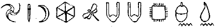

ARTEMİS FOWL
SONSUZLUK ŞİFRESİ

İÇİNDEKİLER
İÇİNDEKİLER
GİRİŞ
BİRİNCİ KISIM: SALDIRI
BÖLÜM I: KÜP
BÖLÜM II: KİLİTLENME
BÖLÜM III: BUZDA
BÖLÜM IV: AİLEDEN GELİYOR
BÖLÜM V: METAL ADAM VE MAYMUN
BÖLÜM VI: FOWL MALİKÂNESİNE SALDIRI
BÖLÜM VII: EN İYİ YAPILMIŞ PLANLAR
KARŞI SALDIRI
BÖLÜM VIII: TUFAYA DÜŞMEK
BÖLÜM IX: MAKİNEDEKİ HAYALET
BÖLÜM X: PARMAKLAR VE BAŞPARMAKLAR
BÖLÜM XI: GÖRÜNMEZ ADAM
BÖLÜM XII: HAFIZA SİLME
SON DEYİŞ